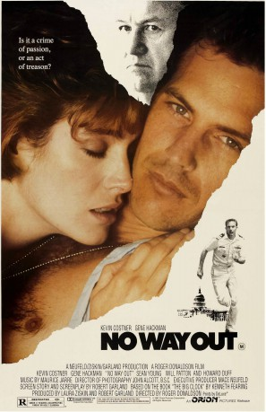
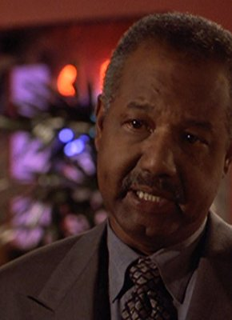
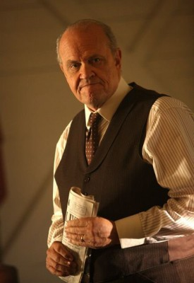
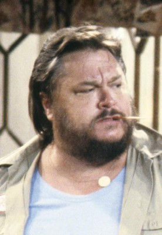
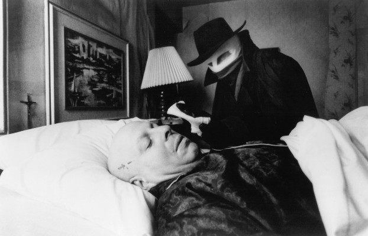
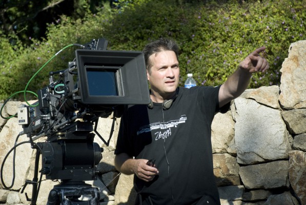

#8621 No Way Out - Es gibt kein Zurück
Alternativ: No Way Out
 
 IMDB-Wertung: 7.1 / 10
IMDB-Wertung: 7.1 / 10  Metascore: 0
Metascore: 0 
Tom Farrell is a navy officer who gets posted at the Pentagon and is to report to the secretary of defense David Brice. He starts an affair with Susan Atwell not knowing that she is Brice's mistress. When Susan is found dead, Tom is assigned to the case of finding the killer who is believed to be a KGB mole! Tom could soon become a suspect when a Polaroid negative of him was found at Susan's place. He now has only a few hours to find the killer before the computer regenerates the photo.
Jahr: 1987
Dauer: 114 Minuten
FSK: 16
Land: USA Studio: Orion PicturesTonspuren:
Untertitel: Deutsch,
Auflösung: 1080p (1920x1040) Größe: 8949 MB
Genre: Action, Thriller, Drama, Krimi, Liebe, Mystery
Regisseur: Roger Donaldson
Drehbuch: Kenneth Fearing
Soundtrack: Maurice Jarre
Darsteller:
 Kevin Costner als Tom Farrell
Kevin Costner als Tom Farrell Gene Hackman als David Brice
Gene Hackman als David Brice Sean Young als Susan Atwell
Sean Young als Susan Atwell Will Patton als Scott Pritchard
Will Patton als Scott Pritchard Howard Duff als Senator Duvall
Howard Duff als Senator Duvall George Dzundza als Sam Hesselman
George Dzundza als Sam Hesselman-  Jason Bernard als Major Donovan
- Iman als Nina Beka
-  Fred Dalton Thompson als Marshall
 Leon Russom als Kevin O'Brien
Leon Russom als Kevin O'Brien-  Dennis Burkley als Mate
 Marshall Bell als Contra #1
Marshall Bell als Contra #1-  Nicholas Worth als Cup Breaker
- Leo Geter als Ensign Fox
-  Matthew Barry als Bellboy
- John D'Aquino als Lt. John Chadway
 David Paymer als Technician
David Paymer als Technician- Eugene Robert Glazer als C.I.D. Man
 John Hostetter als C.I.D. Man
John Hostetter als C.I.D. Man- Robert Kerman als C.I.D. Man
- Joan McMurtrey als Programmer
- Jay Arlen Jones als Marine Guard #1
 Edith Fields als Lorraine
Edith Fields als Lorraine- Pamela Clay als Navy Nurse (uncredited)
 Michael Garvey als Bicyclist (uncredited)
Michael Garvey als Bicyclist (uncredited) Conrad Hurtt als CIA Agent (uncredited)
Conrad Hurtt als CIA Agent (uncredited)- Chris D. als Contra #2
- Michael Shillo als Schiller
- Peter Bell als Seaman Dufor
- Tony Webster als Helmsman
- Matthew Evans als J.O.D.
- Gregory Le Noel als Quartermaster
- Gregory Avellone als Technician
- Jeremy Glenn als Technician
- Charles Walker als Technician
- Bob Courts als C.I.D. Man
- Bruce Dobos als C.I.D. Man
- Darryl Henriques als C.I.D. Man
- Michael Hungerford als C.I.D. Man
- Rob Sullivan als Marine Guard #2
- Frederick Allen als Enlisted Man
- Scott Freeman als M.P.
- Noel Manchan als Computer Clerk
- June Chandler als Margaret Brice
- Lee Shael als Band Singer
- Jeffrey Sudzin als Man with Lighter
- Gordon Boyd als Limo Driver
- Austin Kelly als Cab Driver
- Charles Middleton als Airport Cop
- Stephen R. Asinas als Filipino Urchin
Datei: X:\1987\No Way Out - Es gibt kein Zurück (1987, FSK16, 1920x1040).mkv seit 25.03.2018
Festplatte: HD 1987-1991
 Es gibt insgesamt 50 Filme in der Gruppe '1987'
Es gibt insgesamt 50 Filme in der Gruppe '1987'